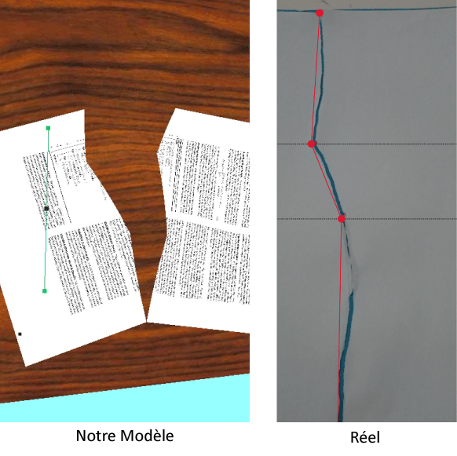
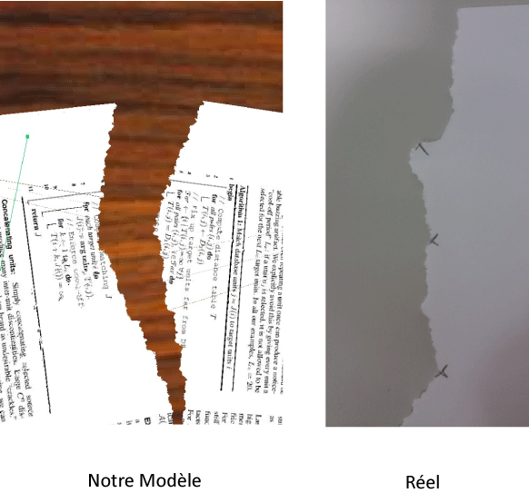
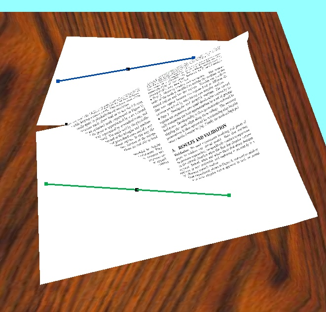
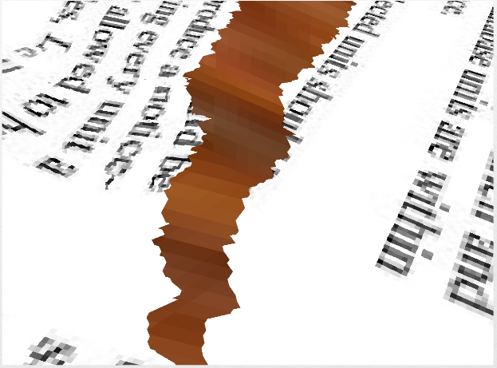

Membres du projet
- Encadrants: Marie-Paule Cani, Pierre-Luc Manteaux
- Étudiants: Thibault Blanc-Beyne, Thibault Lejemble, Nicolas Durin, Amélie Fondevilla
- Durée: 3 semaines
Objectifs
La modélisation de phénomènes physiques est une problématique courante en informatique graphique. Malheureusement, la modélisation du papier, matière complexe et non-extensible n’est que très peu développée. Des travaux de recherche sont en cours pour la modélisation de papier qui se froissent, ou que l’on découpe. Mais à ce jour, aucun modèle de papier qui se déchire n’existe. En effet un modèle basé sur un système masse-ressort (modèle physique couramment utilisé) manquerait de réalisme dans ce contexte. Non seulement un tel modèle permettrait au papier de s’étirer, mais il provoquerait de plus des déchirements non voulus du papier : par exemple, si on essaie de tirer des deux côtés du papier.
Notre but principal est donc de créer le premier modèle de papier qui se déchire. Nous devons aussi garantir un modèle temps-réel, donc avec des temps de calculs limités pour permettre un rendu visuel fluide. Enfin, le dernier enjeu sera d’intégrer le son au modèle : il devra être réaliste, et s’adapter aux différents types de déchirure. Etant donnée la complexité de la réalité physique du phénomène de déchirement, nous avons décider de limiter notre étude à une configuration simple de déchirure. On traite du cas suivant : une feuille posée sur un plan 2D, que l’on va déchirer par le haut, à l’aide de l’action de deux mains. Chaque main va agir sur la déchirure à l’aide de deux doigts : l’index et le pouce. Il est entendu que bien que la feuille soit initialement dans un plan, le modèle passe en 3 dimensions dès le début du mouvement qui va engendrer la déchirure.
Résultats
|  |
|  |
|  |
|  |